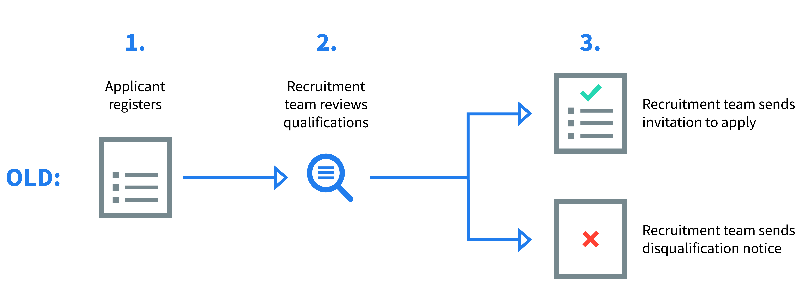
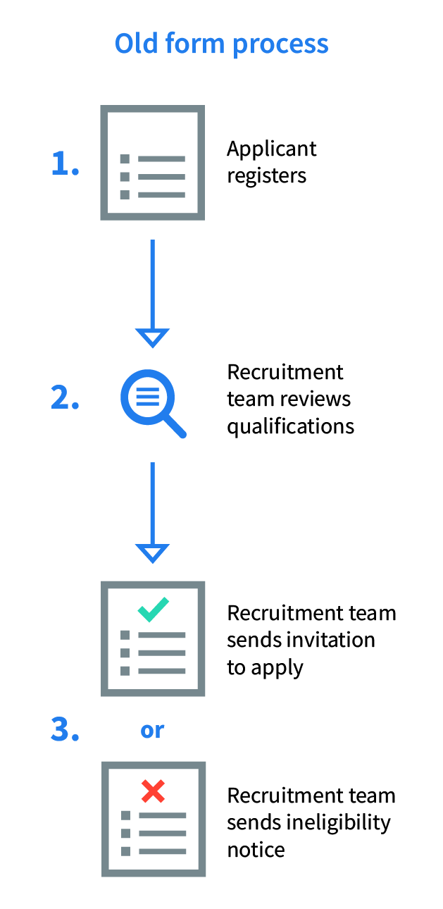
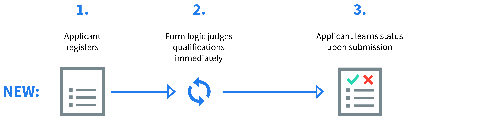
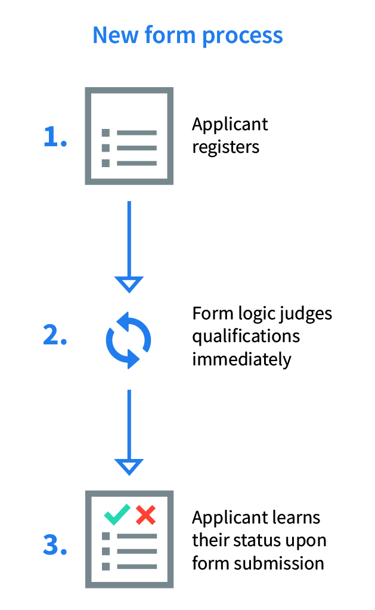

I redesigned the company’s cultural exchange teacher application form, an application in SurveyGizmo made for educators to apply to teach with the company's program. I managed the production schedule with stakeholders and developed the new application styles and functions. The project took six months to complete.
I redesigned the form both for branding purposes, and to restructure the experience to keep interested applicants in the pipeline.
 The new design replaced the manual review in step 2 with logic that would allow an applicant to learn whether they were qualified immediately, without having to wait for a review and potentially lose interest.
 I wrote a custom stylesheet from scratch to reflect the prototype. This stylesheet needed to not only reflect new branding guidelines, it also needed to mesh with SurveyGizmo’s framework. This required some creativity writing specific classes and selectors.
Flexbox and custom classes for dropdown menus helped arrange cluttered page elements
I worked with the company's SalesForce manager to integrate the form with the company database and write logic for all possible user cases. During this time, I added new pages and made adjustments that allowed SalesForce to capture all of an applicant's inputs.
After two months of QA testing, the form was fully synced with SalesForce and ready for deployment. Over the next four months, the company accepted over a 100% more applications than it had in the previous recruitment season.